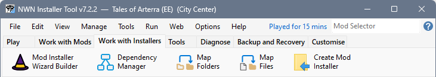

The Ribbon interface is intended to make it easier to find and perform key operations. The functions on each tab are arranged in the sequence you are most likely to follow when performing a set of tasks.
You can click the items in the illustrations to see more information. Hover over the items in the Diagnose tab for additional information.
This contains functions you are likely to use the most.
Use this tab when you want to create and manage a Mod manually. Typically, you would use these functions when downloading Mods from a non-Neverwinter Vault site.
Use this tab when you want to refine the generated Mod Installer.

This tab contains a selection of commonly used Tools Menu utilities.
Use the functions on this tab to view information that may help resolve an issue you are experiencing. For example, when a Mod fails to load, you can view the Neverwinter Nights Log File to identify which file is missing.
Use this tab to Create Restorers, Export your Settings and Backup or Restore the Installer Tool's database files. If you have added Mods or made changes to Ratings, Notes, etc, perform a backup before your close the Tool.
Export your Settings after you have made changes to Preferences or configuration options, then do Backup Installer Tool Information.
This tab provides access to functions you can use to change the Installer Tool's behaviour and user interface.
Ribbon